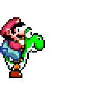

PAGINA 2
EN BUSCA DE LA TRATA PERDIDA(MINIDRAMA)
La tarde se anticipa tranquila para Mario,
cuando de pronto una carta inesperada aparece
asomando por debajo de su puerta. ¿De quién
podrá ser? El fontanero reconoce el membrete
real en el sobre, y eso solamente puede
significar una cosa: ¡Es una carta de la
princesa Peach! Los ojos de nuestro héroe
leen la carta con gran ilusión, entusiasmo
que crece aún más cuando Mario lee la parte
en la que Peach le invita a su castillo para
probar una deliciosa tarta hecha por ella
misma. De un salto Mario se pone la gorra
y sale disparado por la puerta, pero cuando
por fin llega al castillo, algo parece no ir
bien... Algunas de las puertas están cerradas,
y no hay ni rastro ni de Peach ni de sus
sirvientes. Es entonces cuando una risotada
malvada resuena como un trueno dentro del
castillo, seguida de una voz ronca que le dice
a Mario que no hay nadie en casa y que se largue.
Mario sigue el sonido de los bramidos hasta
que entra en una habitación con un cuadro de
lo más extraño... Una enigmática pintura que
parece estar viva y le invita a entrar en ella...
De pronto Mario se ve en otro mundo, y es así
como comienza su gran aventura para averiguar
qué le ha pasado a Peach.
